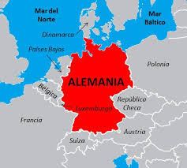
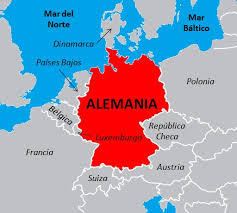

Su población es la segunda mayor de Europa (después de la Rusia europea), y es el séptimo país por superficie. Su territorio abarca 357.022 km², que consta de 348.672 km² de tierra y 8350 km² de agua. El terreno va desde los altos picos de los Alpes en el sur, donde la máxima elevación es el Zugspitze con 2963 m, hasta las tierras bajas aledañas a las costas de los mares Báltico y del Norte. En el centro del país se encuentran las tierras altas forestales y al suroeste la Selva Negra. No posee territorios de ultramar.
Algunos de sus ríos más importantes son el Rin, el Elba, el río Danubio y el Meno. Entre los lagos destacan el de Constanza y el Müritz.


 
